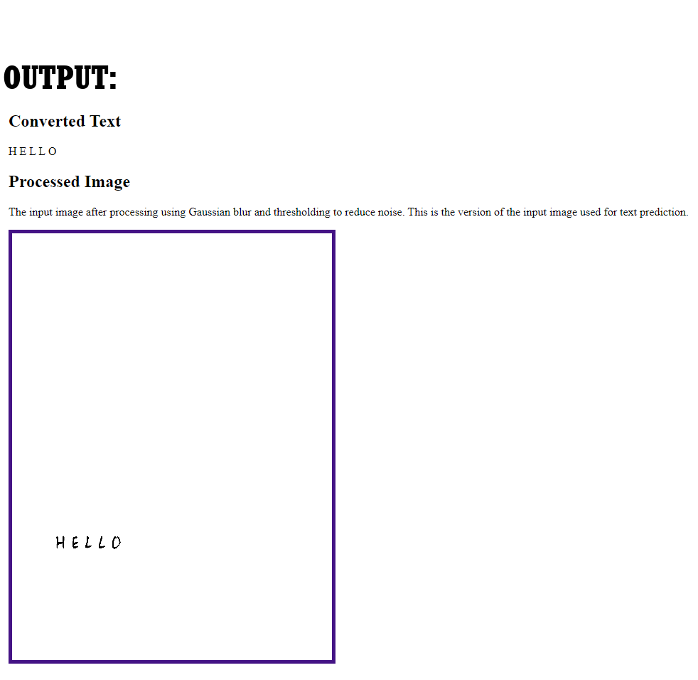
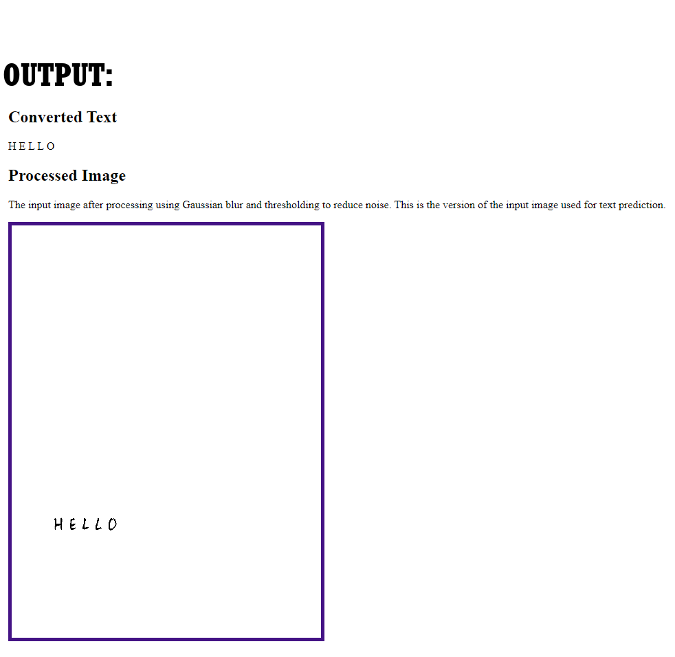

Jane Wu
Programmer Portfolio
 

OCR IMAGE TO TEXT CONVERTER:
A web application that processes an image, identifies the English handwritten letters in the image, and outputs
them in text formatted similarly to the image.
- Uses Pytorch to train a machine learning classifier to identify letters
- Uses Python's OpenCV library for image processing
- Development Time: Aug-Sept 2021

ROOMS: Room Escape Game
A 2D point and click room escape style puzzle game. Written in C# and made in Unity
- Developed: Jul-Aug 2020
Quotes App
Made using Java with Android Studio, designed for Android v8.0 and up.
- Arrow button displays the next quote in a stored list (left)
- Heart button causes birthday message to pop up (right)
- Developed: Jan 2020
Fireworks
A fireworks simulation customized using Javascript and HTML5 Canvas
- Developed: Jun 2018
Hand Motion Arduino/Python Video Control
Pause/play and change volume of videos using hand motions
Note: Video demo only includes pause/play due to limitations of sensor
- Done using Arduino sensor and Python PyAutoGUI module
- Developed: May 2020
APSC101 Arduino Claw
Opening/closing of claw is dependent on the sensor's distance from the ground for better control and less time wasted
- Includes a reset threshold to open position to rectify mistakes quickly
- Developed: Jan-Feb 2020